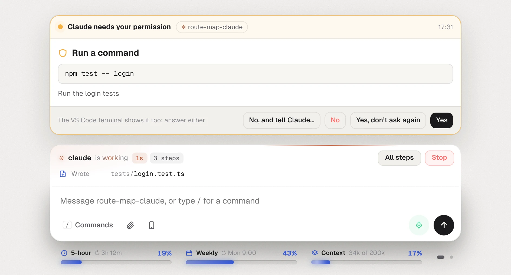
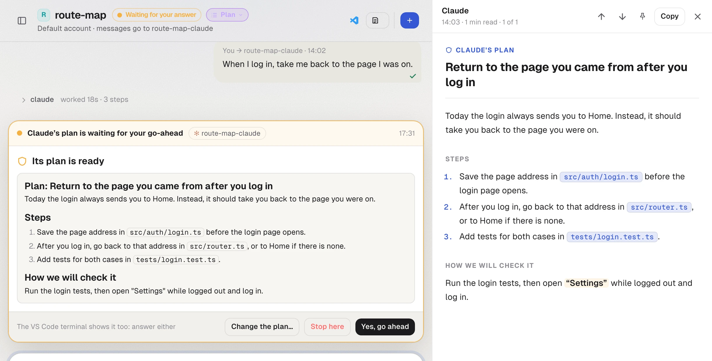
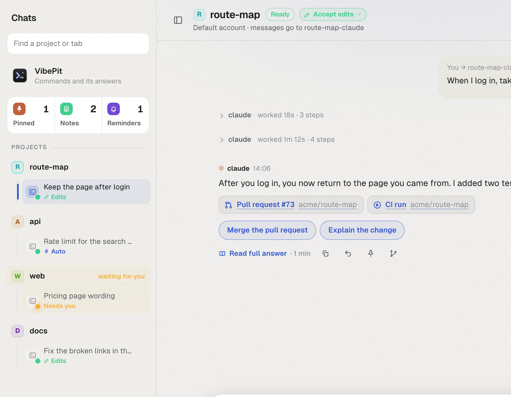
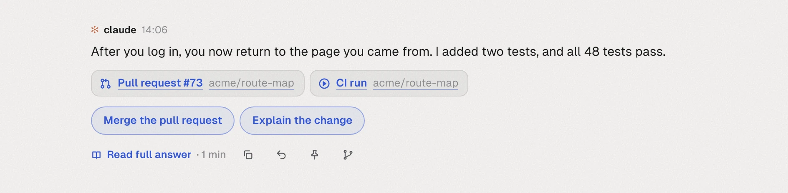
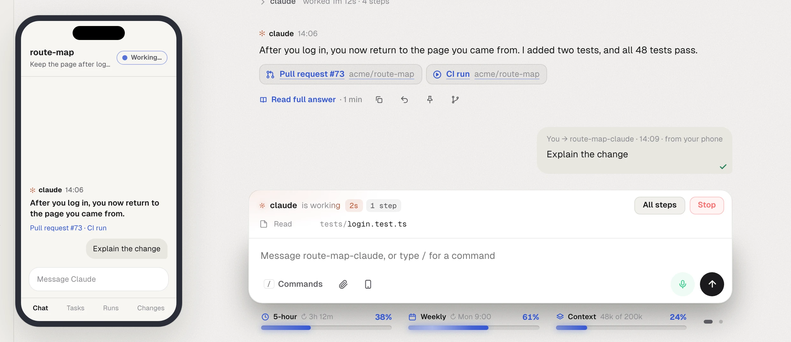

Claude Code, in one window.
VibePit is a free Mac app for Claude Code. Run every session side by side, answer Claude with one click, and hear when it is done.
Free · macOS 12 or later · Apple silicon · Intel Mac?
What VibePit does
It sits beside VS Code and keeps every Claude Code session in view, so you can run several at once without losing track of any.
Answer Claude with one click
When Claude asks a question or needs your permission, the request appears in VibePit with clear buttons. You do not need to find the right terminal.

Read the plan before Claude starts
In plan mode, Claude proposes a plan before it changes any file. VibePit shows it beside the chat as a document that is easy to read. Approve it, or say what should change.

See every session at a glance
Each Claude tab, in every project, shows whether it is working, ready or waiting for you. Your 5-hour and weekly limits sit under the message box, so they never surprise you.

Hear when it is done
When Claude finishes, VibePit tells you with a short summary read aloud. The answer starts with its headline, with its pull request and checks right under it. Type to VibePit, or say “Hey Pit”.

Carry on from your phone
Scan a QR code, press Allow on your Mac, and your phone shows the same chat in its browser. There is nothing to install. It works on your Wi-Fi, or from anywhere if you choose.

Notes and reminders, two Claude accounts, a floating status panel and more are in the release notes.
Ready in a few minutes
You need a Mac with macOS 12 or later, and a Claude account that can use Claude Code: Pro, Max, Team or Enterprise, or an API key.
VS Code is recommended. VibePit installs Claude Code for you if it is missing. The Setup guide explains every step.
Download and open it
Drag VibePit into Applications and open it. The first time, macOS asks you to allow it: open System Settings, then Privacy & Security, and press Open Anyway.
Follow Get started
The app gives you one button for each step: install Claude Code, log in, get VS Code and add your projects. Each step ticks itself off.
Open a project
Type “open” and a project’s name, or say “Hey Pit, open” and its name. VS Code opens it with Claude ready in its own tab.
Your work stays on your Mac
There is no VibePit account. Your messages go to Claude through your own Claude Code, exactly as if you typed them in the terminal.
- Speech is turned into text on your Mac
- Built-in rules understand you from the start, and an optional model on your Mac understands any phrasing. No audio leaves it, unless you add your own Deepgram key for faster hearing.
- Closed to the network
- The app talks only to itself, and every request needs a secret token. It opens to your phone only while a phone you allowed is connected.
- Independent
- VibePit is not made by or affiliated with Anthropic. You use your own Claude account.
Questions
Is VibePit free?
Yes, VibePit is free. You use your own Claude account, so your usual Claude plan or API costs apply.
Do I have to talk to it?
No. Everything you can say, you can also type, and typed commands are answered in writing. You can turn the microphone off completely.
Do I need VS Code?
It is recommended: each project opens in VS Code with Claude in its terminal panel. If you prefer, Claude can open in Terminal instead.
How do updates work?
When a new version is out, VibePit tells you. Press Update now, and it installs the update and opens again. Your projects and settings are kept.
Why does macOS warn me the first time?
VibePit is not yet signed with an Apple Developer ID. Open System Settings, then Privacy & Security, and press Open Anyway next to VibePit. You only do this once.
Try it on your next task.
VibePit is free for Mac. Most people are set up in about fifteen minutes.
Download for MacOr take the tour first.